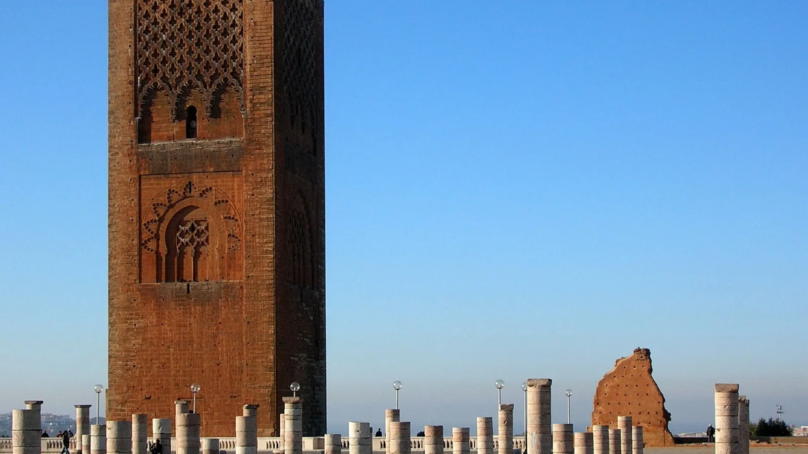
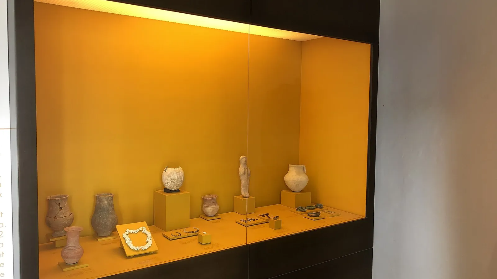
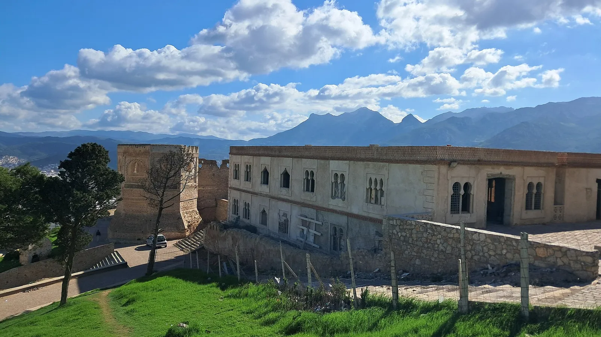
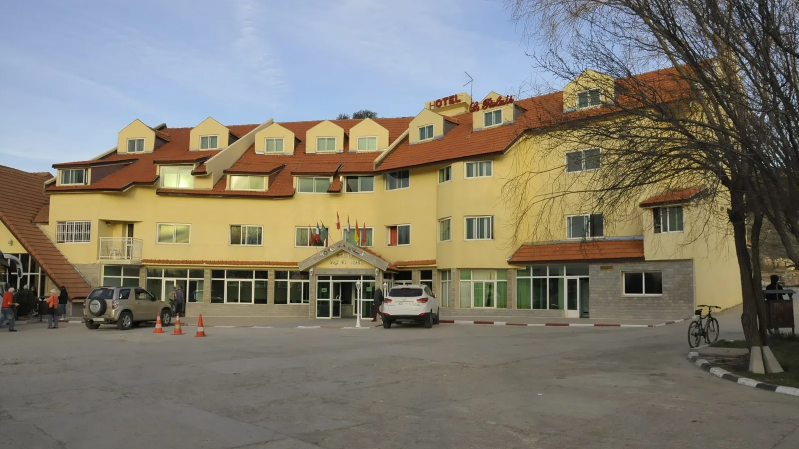
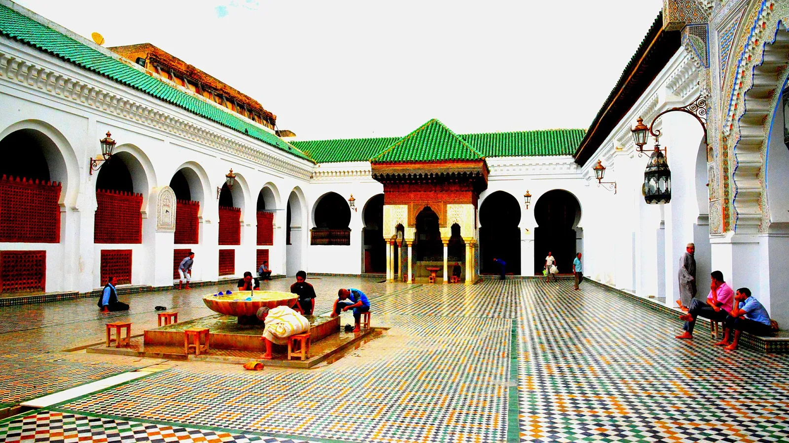
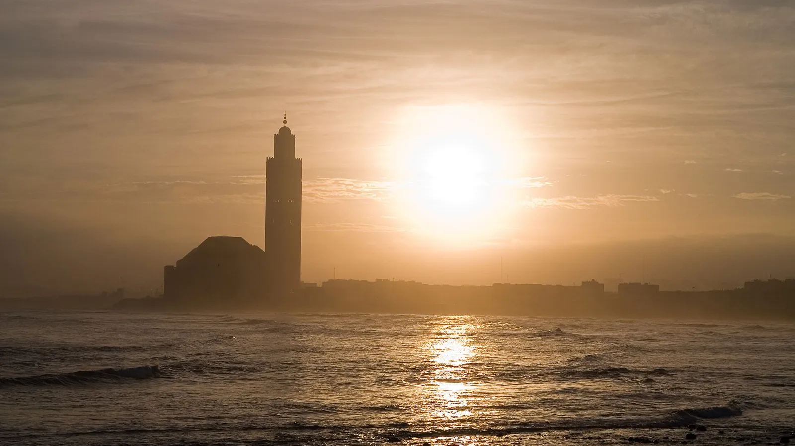
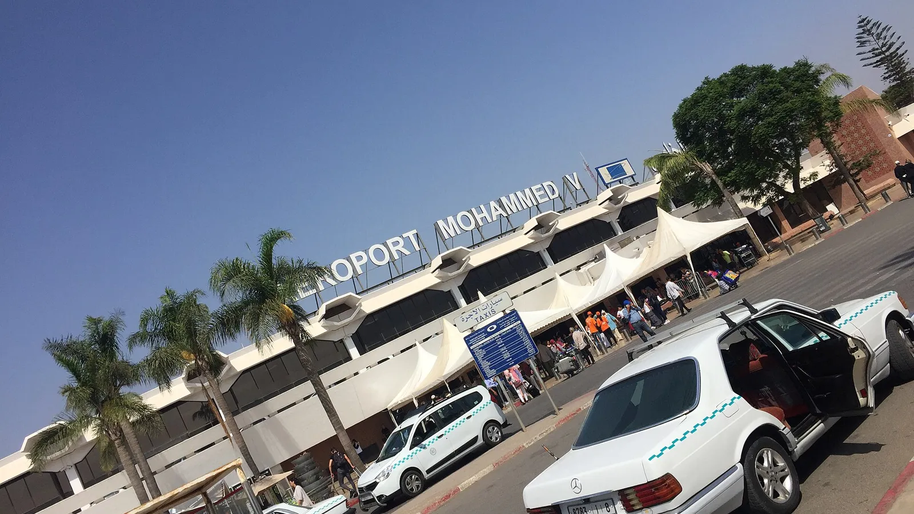
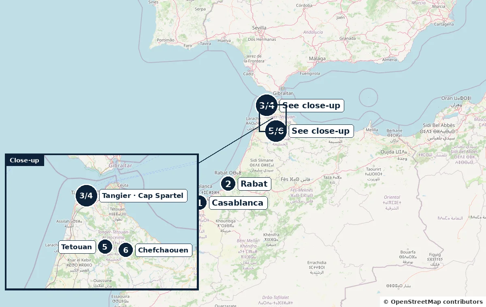

Northern Morocco is where Arab and Andalusian culture have mixed for centuries, brought by Moors and Jews who left Spain. This private tour runs from Casablanca to the royal capital Rabat, Tangier on the Strait of Gibraltar, the white medina of Tetouan, the blue town of Chefchaouen in the Rif mountains and the medieval medina of Fes, before returning to Casablanca for the great Hassan II Mosque. Drives are 3 to 4 hours, and Fes to Casablanca about 3 hours 30 minutes by motorway.
See it for yourself
Photos from the journey








Where you go
The journey on one map

CasablancaRabatTangierCap SpartelTetouanChefchaouenFesCasablanca
Day by day, in short
Daily travel brief
Distances are by road for the whole day. The full plan with timings comes with your detailed itinerary.
-
1
Arrive in Casablanca
- Change money at the airport: dirhams cannot be bought abroad.
-
2
Rabat, then north to Tangier
Mausoleum of Mohammed V Kasbah of the Udayas
- The Royal Palace is seen only from outside.
-
3
Tangier, Cap Spartel and the Caves of Hercules
- Café Hafa's cliff terrace, open since 1921, serves mint tea over the strait.
-
4
Tetouan and on to Chefchaouen
- Chefchaouen: residents live in these lanes: ask before photographing doorways with people, and do not climb on steps or walls.
- Wear walking shoes with grip; the lanes are steep and polished.
-
5
Through the Rif to Fes
- Riads are reached on foot; porters carry luggage from the car.
-
6
The medina of Fes
Madrasa Al-Attarine Chouara Tannery Royal Palace Fes
- Artisans' quarters and the Chouara tannery: the tannery smell is strong; shops hand out mint sprigs.
- Fes medina has over 9,000 lanes.
-
7
Back to Casablanca and the Hassan II Mosque
- Hassan II Mosque: no tours on Fridays or during prayer times.
- Hassan II Mosque: covered shoulders and knees; shoes come off inside.
-
8
Fly home from Casablanca
- Transfer to Mohammed V International Airport: be at the airport 3 hours before an international flight.
- Spend or change your dirhams before security.
Local know-how
Travel hacks from our desk
Hotel deposit
Use a credit card for the deposit or pre-authorisation at check-in, never a forex or debit card. Forex cards cannot hold funds, many hotels refuse them, and a credit-card hold is released faster.
Dirhams
The Moroccan dirham cannot be bought outside Morocco. Change money or use ATMs on arrival, and carry cash for souks, taxis and tips; riads and big shops take cards.
Dress and photos
Cover shoulders and knees, especially in the medinas. Always ask before photographing people; some will ask for a small tip.
Medina guides and touts
Unofficial 'guides' offer to show you the way or the tanneries. Politely refuse and stay with your licensed guide.
Mosques and Ramadan
Non-Muslims may enter only the Hassan II Mosque in Casablanca, on guided tours. During Ramadan many cafés close by day; eat discreetly.
When to go
Best time to visit for this journey
April, May or October.
March to May and September to November. Summer is very hot in Fes; winter brings rain to the Rif.
The package
What's included
Included
- 7 nights with breakfast
- Dinner in Chefchaouen
- Private air-conditioned car with English or French-speaking driver (national guide for 4 or more)
- Sightseeing and entrance fees as listed
- Local guides in the medinas
- 24/7 support from Blue Diamond Voyage
Not included
- International flights
- Morocco visa
- Lunches and other dinners
- Drinks
- Tips for guides and drivers
- Travel insurance
The detailed itinerary
Some journeys are planned. Ours are crafted.
The full 8-day plan is ready: hour-by-hour timings, drive times, temple dress codes, food for your diet and a route map for every day. Tell us your dates and your city, and we'll send it to you on WhatsApp, shaped around you.
- Hour-by-hour timings
- A route map for every day
- Hotel and room details
- Visa and entry steps
- Vegetarian and Jain dining
24/7 travel desk+91 97148 59797+91 98242 21400
Photo and map credits
- Mohammed V International Airport: JukoFF, CC BY-SA 4.0, via Wikimedia Commons
- Hassan Tower: Bernard Gagnon, CC BY-SA 3.0, via Wikimedia Commons
- Tangier Kasbah: Yamen, CC BY-SA 4.0, via Wikimedia Commons
- Tetouan Medina: Ideophagous, CC BY-SA 4.0, via Wikimedia Commons
- Ras El Maa: CTHOE, CC0, via Wikimedia Commons
- Al Quaraouiyine: Younesberrada, CC BY-SA 3.0, via Wikimedia Commons
- Hassan II Mosque: Milamber's portfolio, CC BY 2.0, via Wikimedia Commons
- Mohammed V International Airport: JukoFF, CC BY-SA 4.0, via Wikimedia Commons
- Maps: © OpenStreetMap contributors; road routes by OSRM.